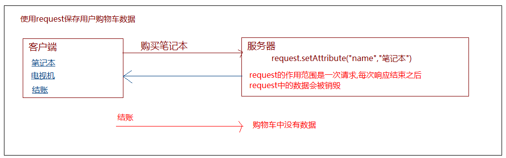
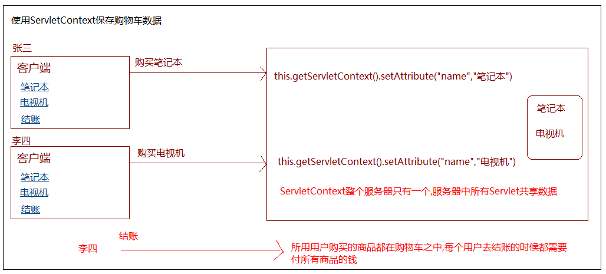
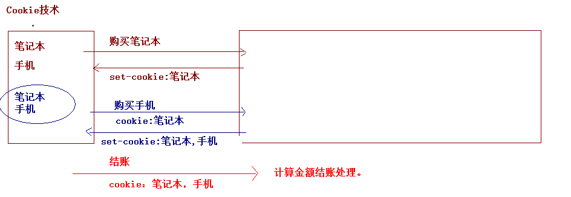
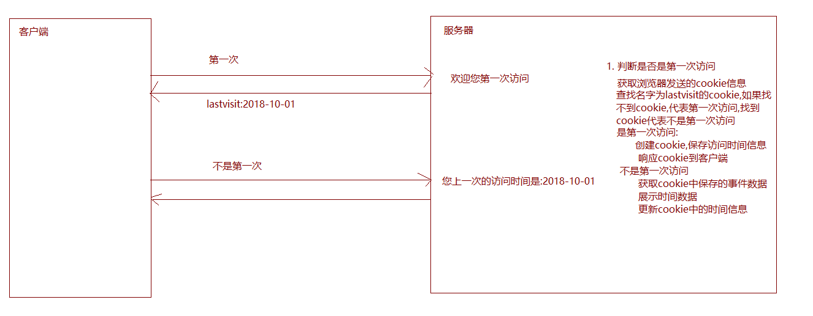
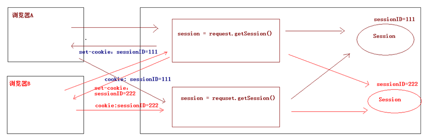
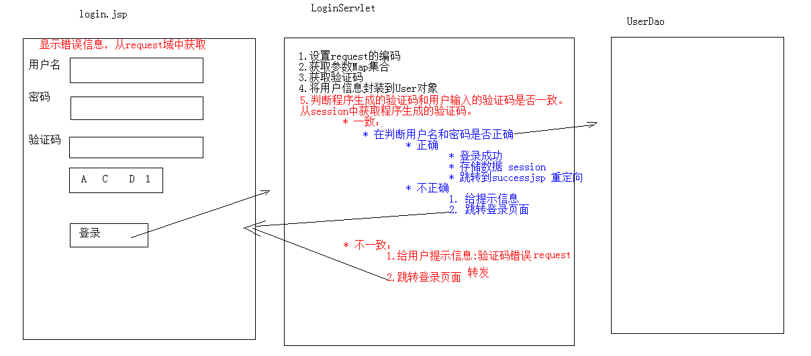

04-Cookie与Session一. 今日目标二. 今日内容(一) 会话技术概述1. 什么是会话2. 会话的作用3. 会话的实现方式(二) 会话技术-Cookie1. 入门程序使用步骤示例代码2. Cookie实现原理及细节Cookie实现原理Cookie使用细节Cookie的特点和作用3. 案例：记住上一次访问时间需求分析实现编写CookieUtils工具类编写Servlet(三) JSP入门1. JSP原理2. JSP脚本3. JSP内置对象4. 案例 : 记录上次访问时间(四) 会话技术-Session1. 快速入门获取HttpSession对象使用HttpSession对象Session的实现原理Session的使用细节session的特点session与Cookie的区别3. 案例：验证码需求分析实现步骤一:编写登录页面引入验证码图片步骤二:编写登录的Servlet代码
一次会话：浏览器第一次给服务器资源发送请求，会话建立，直到有一方断开为止
每个用户与服务器进行交互过程中，产生一些各自的数据，程序想要把这些数据进行保存，就需要使用会话技术。
例如：用户点击超链接购买一个商品，程序应该保存用户所购买的商品到购物车，以便于用户点击结账可以得到用户所购买的商品信息。如果没有会话技术,就会出现如下场景 :


使用会话可以上述多次请求之间的数据共享
xxxxxxxxxx1. 客户端会话技术：Cookie2. 服务器端会话技术：Session
xxxxxxxxxx1. 创建Cookie对象，绑定数据* new Cookie(String name, String value)2. 发送Cookie对象* response.addCookie(Cookie cookie)3. 获取Cookie，拿到数据* Cookie[] request.getCookies()
向浏览器写Cookie
xxxxxxxxxx("/cookieDemo1")public class CookieDemo1 extends HttpServlet { protected void doPost(HttpServletRequest request, HttpServletResponse response) throws ServletException, IOException { //1.创建Cookie对象 Cookie c = new Cookie("msg","hello"); //2.发送Cookie response.addCookie(c); }}获取浏览器发送到服务器的Cookie
xxxxxxxxxx("/cookieDemo2")public class CookieDemo2 extends HttpServlet { protected void doPost(HttpServletRequest request, HttpServletResponse response) throws ServletException, IOException { //3. 获取Cookie Cookie[] cs = request.getCookies(); //获取数据，遍历Cookies if(cs != null){ for (Cookie c : cs) { String name = c.getName(); String value = c.getValue(); System.out.println(name+":"+value); } } }}基于响应头set-cookie和请求头cookie实现

1. 一次可不可以发送多个cookie?
xxxxxxxxxx一次响应可以发送多个Cookie, 可以创建多个Cookie对象，使用response调用多次addCookie方法发送cookie即可。
2. cookie在浏览器中保存多长时间？
xxxxxxxxxx1. 默认情况下，当浏览器关闭后，Cookie数据被销毁2. 持久化存储：* setMaxAge(int seconds)1. 正数：将Cookie数据写到硬盘的文件中。持久化存储。并指定cookie存活时间，时间到后，cookie文件自动失效2. 负数：默认值3. 零：删除cookie信息
3. cookie能不能存中文？
xxxxxxxxxx* 在tomcat 8 之前 cookie中不能直接存储中文数据。* 需要将中文数据转码---一般采用URL编码(%E3)* 在tomcat 8 之后，cookie支持中文数据。特殊字符还是不支持，建议使用URL编码存储，URL解码解析
4. cookie共享问题？
x1. 假设在一个tomcat服务器中，部署了多个web项目，那么在这些web项目中cookie能不能共享？* 默认情况下cookie不能共享* setPath(String path):设置cookie的获取范围。默认情况下，设置当前的虚拟目录* 如果要共享，则可以将path设置为"/"2. 不同的tomcat服务器间cookie共享问题？* setDomain(String path):如果设置一级域名相同，那么多个服务器之间cookie可以共享* setDomain(".baidu.com"),那么tieba.baidu.com和news.baidu.com中cookie可以共享
特点
xxxxxxxxxx1. cookie存储数据在客户端浏览器2. 浏览器对于单个cookie 的大小有限制(4kb) 以及 对同一个域名下的总cookie数量也有限制(20个)
作用
xxxxxxxxxx1. cookie一般用于存出少量的不太敏感的数据2. 在不登录的情况下，完成服务器对客户端的身份识别
xxxxxxxxxx1. 访问一个Servlet，如果是第一次访问，则提示：您好，欢迎您首次访问。2. 如果不是第一次访问，则提示：欢迎回来，您上次访问时间为:显示时间字符串

xxxxxxxxxxpublic class CookieUtils { /** * 查找指定名称的cookie * @param cookies * @param name * @return */ public static Cookie findCookie(Cookie[] cookies,String name){ //判断cookie不为null并且长度大于0 if(cookies!=null && cookies.length>0){ //遍历cookie数组查找cookie for (Cookie cookie : cookies) { //找到了指定名称的cookie if(name.equals(cookie.getName())){ return cookie; } } } return null ; }}xxxxxxxxxx("/lastVisit")public class LastVisitServlet extends HttpServlet { protected void doPost(HttpServletRequest request, HttpServletResponse response) throws ServletException, IOException { doGet(request, response); } protected void doGet(HttpServletRequest request, HttpServletResponse response) throws ServletException, IOException { //解决中文乱码问题 response.setContentType("text/html;charset=utf-8"); //判断用户是否是第一次访问 lastVisit Cookie[] cookies = request.getCookies();//[username=zs,password=123,lastVisit=2018-10-01] //查找cookie Cookie cookie = CookieUtils.findCookie(cookies, "lastVisit"); //判断用户是否是第一次访问 //第一次访问 if(cookie==null){ response.getWriter().write("欢迎您第一次访问"); }else{ //不是第一次访问 //获取cookie中保存的时间 String value = cookie.getValue(); response.getWriter().write("您上次的访问时间是:"+value); } //不论用户是否是第一次访问,都需要更新Cookie信息 //更新cookie信息 //获取当年前时间字符串 Date now = new Date(); SimpleDateFormat format = new SimpleDateFormat("yyyy-MM-dd HH:mm:ss"); String time = format.format(now); //创建cookie Cookie lastVisit = new Cookie("lastVisit", time); //设置cookie的存活时间 lastVisit.setMaxAge(2*24*60*60); //响应到客户端 response.addCookie(lastVisit); }}xxxxxxxxxxJSP: Java Server Pages： java服务器端页面* 可以理解为：一个特殊的页面，其中既可以指定定义html标签，又可以定义java代码* 用于简化书写！！！
JSP本质上就是一个Servlet JSP = HTML代码+JAVA代码+JSP指令和动作标签
xxxxxxxxxx1. <% 代码 %>：定义的java代码，在service方法中。service方法中可以定义什么，该脚本中就可以定义什么。2. <%! 代码 %>：定义的java代码，在jsp转换后的java类的成员位置。3. <%= 代码 %>：定义的java代码，会输出到页面上。输出语句中可以定义什么，该脚本中就可以定义什么。
xxxxxxxxxx什么是内置对象:在jsp页面中不需要获取和创建，可以直接使用的对象jsp一共有9个内置对象,今天学习3个：* request* response* out：字符输出流对象。可以将数据输出到页面上。和response.getWriter()类似* response.getWriter()和out.write()的区别：* 在tomcat服务器真正给客户端做出响应之前，会先找response缓冲区数据，再找out缓冲区数据。* response.getWriter()数据输出永远在out.write()之前
xxxxxxxxxx<%@ page import="com.itheima.utils.CookieUtils" %><%@ page import="java.util.Date" %><%@ page import="java.text.SimpleDateFormat" %><%@ page contentType="text/html;charset=UTF-8" language="java" %><html> <head> <title>$Title$</title> </head> <body> <% //解决中文乱码问题 response.setContentType("text/html;charset=utf-8"); //判断用户是否是第一次访问 lastVisit Cookie[] cookies = request.getCookies();//[username=zs,password=123,lastVisit=2018-10-01] //查找cookie Cookie cookie = CookieUtils.findCookie(cookies, "lastVisit"); //判断用户是否是第一次访问 //第一次访问 if(cookie==null){ out.write("欢迎您第一次访问"); }else{ //不是第一次访问 //获取cookie中保存的时间 String value = cookie.getValue(); out.write("您上次的访问时间是:"+value); } //不论用户是否是第一次访问,都需要更新Cookie信息 //更新cookie信息 //获取当年前时间字符串 Date now = new Date(); SimpleDateFormat format = new SimpleDateFormat("yyyy-MM-dd HH:mm:ss"); String time = format.format(now); //创建cookie Cookie lastVisit = new Cookie("lastVisit", time); //设置cookie的存活时间 lastVisit.setMaxAge(2*24*60*60); //响应到客户端 response.addCookie(lastVisit); %> </body></html>xxxxxxxxxx("/sessionDemo1")public class SessionDemo1 extends HttpServlet { protected void doPost(HttpServletRequest request, HttpServletResponse response) throws ServletException, IOException { //使用session共享数据 //1.获取session HttpSession session = request.getSession(); //2.存储数据 session.setAttribute("msg","hello session"); }}| 返回值 | 方法名称 | 方法介绍 |
|---|---|---|
| void | setAttribute(String name,Object obj) | 存储数据 |
| Object | getAttribute(String name) | 通过键获取值 |
| void | removeAttribute(String name) | 通过键删除数据 |

Session的实现是依赖于Cookie的。
xxxxxxxxxx1. 当客户端关闭后，服务器不关闭，两次获取session是否为同一个？* 默认情况下。不是。* 如果需要相同，则可以创建Cookie,键为JSESSIONID，设置最大存活时间，让cookie持久化保存。Cookie c = new Cookie("JSESSIONID",session.getId());c.setMaxAge(60*60);response.addCookie(c);2. 客户端不关闭，服务器关闭后，两次获取的session是同一个吗？* 不是同一个，但是要确保数据不丢失。tomcat自动完成以下工作* session的钝化：* 在服务器正常关闭之前，将session对象系列化到硬盘上* session的活化：* 在服务器启动后，将session文件转化为内存中的session对象即可。3. session什么时候被销毁？1. 服务器关闭2. session对象调用invalidate() 。3. session默认失效时间 30分钟选择性配置修改<session-config><session-timeout>30</session-timeout></session-config>
xxxxxxxxxx1. session用于存储一次会话的多次请求的数据，存在服务器端2. session可以存储任意类型，任意大小的数据
xxxxxxxxxx1. session存储数据在服务器端，Cookie在客户端2. session没有数据大小限制，Cookie有3. session数据安全，Cookie相对于不安全
xxxxxxxxxx1. 访问带有验证码的登录页面login.jsp2. 用户输入用户名，密码以及验证码。* 如果用户名和密码输入有误，跳转登录页面，提示:用户名或密码错误* 如果验证码输入有误，跳转登录页面，提示：验证码错误* 如果全部输入正确，则跳转到主页success.jsp，显示：用户名,欢迎您

xxxxxxxxxx<%@ page contentType="text/html;charset=UTF-8" language="java" %><html><head> <title>login</title> <script> window.onload = function(){ document.getElementById("img").onclick = function(){ this.src="/checkCodeServlet?time="+new Date().getTime(); } } </script> <style> div{ color: red; } </style></head><body> <form action="/login" method="post"> <table> <tr> <td>用户名</td> <td><input type="text" name="username"></td> </tr> <tr> <td>密码</td> <td><input type="password" name="password"></td> </tr> <tr> <td>验证码</td> <td><input type="text" name="checkCode"></td> </tr> <tr> <td colspan="2"><img id="img" src="/day16/checkCodeServlet"></td> </tr> <tr> <td colspan="2"><input type="submit" value="登录"></td> </tr> </table> </form> <div><%=request.getAttribute("msg") == null ? "" : request.getAttribute("msg")%></div></body></html>xxxxxxxxxxpackage com.itheima.servlet;import com.itheima.bean.User;import com.itheima.dao.UserDao;import javax.servlet.annotation.WebServlet;import javax.servlet.http.HttpServlet;import javax.servlet.http.HttpServletRequest;import javax.servlet.http.HttpServletResponse;import java.io.IOException;("/login")public class UserServlet extends HttpServlet { protected void doPost(HttpServletRequest request, HttpServletResponse response) throws javax.servlet.ServletException, IOException { doGet(request, response); } protected void doGet(HttpServletRequest request, HttpServletResponse response) throws javax.servlet.ServletException, IOException { //0. 解决中文乱码问题 request.setCharacterEncoding("UTF-8"); response.setContentType("text/html;charset=utf-8"); //--------------验证码校验 --- SESSION中的验证码的数据和用户输入的验证码的数据比对 String verifycode = request.getParameter("verifycode"); String checkcode = (String) request.getSession().getAttribute("checkcode"); //参数中的验证码不存在 session中的验证码不存在 验证码不一致 if(verifycode==null || verifycode.equals("") || checkcode==null || checkcode.equals("") || !verifycode.equalsIgnoreCase(checkcode)){ request.setAttribute("msg","验证码输入错误"); request.getRequestDispatcher("/login.jsp").forward(request,response); return; } //------------------ 用户名和密码的校验 //1. 获取请求参数 String username = request.getParameter("username"); String password = request.getParameter("password"); //2. 封装数据 User user = new User(); user.setUsername(username); user.setPassword(password); //3. 调用dao查询数据 UserDao userDao = new UserDao() ; User logined = userDao.findByUsernameAndPassword(user); //4. 根据结果响应数据 if(logined==null){ //登录失败 //响应数据 request.setAttribute("msg","用户名或密码输入错误"); request.getRequestDispatcher("/login.jsp").forward(request,response); return; } //登录成功保存用户信息 request.getSession().setAttribute("logined",logined); response.sendRedirect(request.getContextPath()+"/success.jsp"); }}